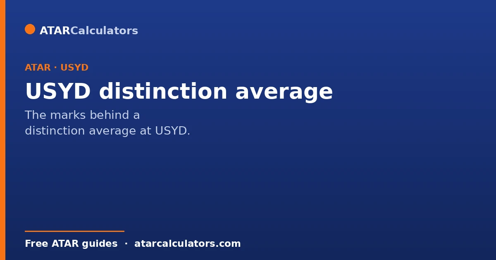
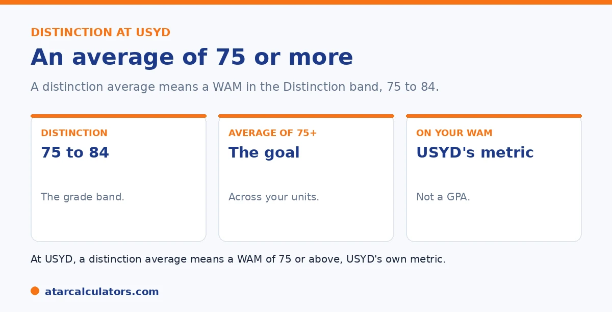

Here is the short version. At the University of Sydney, a Distinction is a mark from 75 to 84. So a distinction average means a WAM of 75 or higher. It is a strong, well-regarded result that supports honours entry and scholarship applications. Reaching it means averaging marks in the distinction band or above across your units, weighted by credit points.
A distinction average has a clear, specific meaning at Sydney, and it is a common target for good reason. It signals genuinely strong performance.
Below is exactly what it takes. To track your average, use our USYD calculator.
Key takeaways
- At Sydney, a Distinction is a mark from 75 to 84.
- A distinction average means a WAM of 75 or higher.
- It is a strong, well-regarded result.
- It supports honours and scholarship applications.
- Sydney measures this with the WAM, its official metric.
- It means averaging marks in the distinction band or above.
What a distinction average means
The term is precise at Sydney. A Distinction is a grade awarded for a mark from 75 to 84. So a distinction average means your overall average, your WAM, sits at 75 or above.

It does not mean every unit is a distinction. It means the credit-weighted average of all your marks reaches the distinction band. So strong units can balance a weaker one. See our guide on the Sydney grading system.
It is measured by your WAM
Sydney measures your average with the WAM, its official metric, not a GPA. So a distinction average is simply a WAM of 75 or more. That is the number to watch.
Because the WAM is credit-weighted, units worth more credit points count more toward reaching the threshold. See our guide on how a WAM is calculated.
Why a distinction average matters
A distinction average carries real weight. It is a strong result that supports applications for honours, scholarships, and prizes, and it stands out to employers and postgraduate programs.
So aiming for a WAM of 75 or above is a meaningful goal. It places you firmly among strong performers. See our guide on what counts as a good result at Sydney.
Want to track your average?
Try the USYD calculator →How to reach a distinction average
Reaching it means averaging marks in the distinction band or above. A few strong units can lift your WAM, and since the WAM is weighted, doing well in higher-credit units helps most.
If your average is close, targeted improvement in your remaining units can get you there, especially where later years are weighted more. See our guide on boosting your WAM.
Reaching a distinction average is more about steady positioning than dramatic effort. And a few principles make it achievable. Because the WAM is credit-weighted, your highest-credit units move the average most. So those are where consistent strong marks pay off. A distinction in a large unit does more for your WAM than the same distinction in a small one. Crossing grade boundaries is the most efficient single lever. A unit sitting on 74 lifted to 75 moves from credit to distinction and nudges your average up. So identifying units hovering just below a boundary near the end of session and directing your remaining effort there gives the best return. Where your university weights later years more heavily, your final-year units carry extra influence. That means a strong finish can pull a borderline average over the line even after a modest start. It also helps to protect against the opposite. A single low mark, especially in a high-credit or later-year unit, can drag a distinction average back down. So avoiding a serious slip matters as much as chasing high marks. The realistic path to a distinction average is not trying to score exceptionally in everything. It is consistency across your bigger and later units, attention to near-boundary results, and avoiding the one weak unit that undoes the rest.
Why a distinction average matters at USYD
A distinction average is a widely recognised benchmark. At USYD, it corresponds to a WAM in the Distinction band of 75 to 84, or a GPA around 6 on the 7-point scale. It is often the informal line between a good result and a highly competitive one.
So if you are looking for a single target, a distinction average is a sensible one. It keeps honours, scholarships and competitive postgraduate pathways open, and it signals strong, consistent performance across your degree.
The marks behind a distinction average
Because a Distinction at USYD is 75 to 84, a distinction average means your credit-weighted marks average into that band. You do not need a Distinction in every single unit; strong results across your program that average into the mid-to-high 70s or low 80s get you there.
So focus on lifting your overall average rather than chasing a Distinction in every unit. Consistent marks in the Distinction range, with some High Distinctions to balance any lower units, produce a distinction average.
Common questions
What is a distinction average at USYD?
At Sydney, a Distinction is a mark from 75 to 84, so a distinction average means a WAM of 75 or higher. It is a strong result that supports honours and scholarship applications. It is measured by the WAM, Sydney's official metric.
What WAM is a distinction average?
A WAM of 75 or higher. Since a Distinction at Sydney is a mark from 75 to 84, an overall average in that band or above counts as a distinction average. It does not need every unit to be a distinction.
Do I need a distinction in every unit?
No. A distinction average means your credit-weighted average, your WAM, reaches 75 or above. So strong units can balance a weaker one. It is the overall average that matters, not each individual mark.
Why does a distinction average matter?
It is a strong, well-regarded result that supports applications for honours, scholarships, and prizes, and stands out to employers and postgraduate programs. So a WAM of 75 or above is a meaningful goal.
Is a distinction average measured by GPA at USYD?
No. Sydney uses the WAM, not a GPA, so a distinction average is simply a WAM of 75 or higher. Any GPA you calculate for Sydney is an unofficial estimate, separate from how Sydney measures your average.
Track your distinction average
See where your Sydney average sits, from your marks and credit points. Free, and no signup.
Open the USYD calculator →Related guides
This guide is general information for students, not formal academic advice. The University of Sydney's official academic metric is the WAM, and it does not issue or calculate an official GPA. Any GPA you work out is an unofficial estimate for your own use. Grade bands and honours requirements can vary by faculty and change over time, so always confirm with the University of Sydney directly. Reviewed by the ATARCalculators Editorial Team.